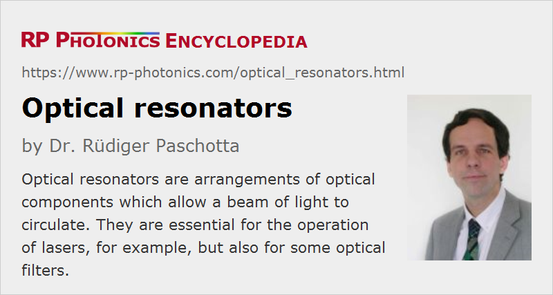

Optical Resonators
Definition: arrangements of optical components which allow a beam of light to circulate
Alternative term: optical cavities
More specific terms: standing-wave resonators, ring resonators, unstable resonators, enhancement cavities, mode cleaner cavities, reference cavities, laser resonators
German: optische Resonatoren
How to cite the article; suggest additional literature
Author: Dr. Rüdiger Paschotta
An optical resonator (or resonant optical cavity) is an arrangement of optical components which allows a beam of light to circulate in a closed path. Such resonators can be made in very different forms.
Resonators with Bulk Components Versus Waveguide Resonators
An optical resonator can be made from bulk optical components, as shown in Figure 1, or as a waveguide resonator, where the light is guided rather than sent through free space.
Bulk-optical resonators are used for solid-state bulk lasers, for example. Their transverse mode properties depend on the overall setup (including the length of air spaces), and mode sizes can vary significantly along the resonator. In some cases, the mode properties are also significantly influenced by effects such as thermal lensing.
Waveguide resonators are often made with optical fibers (e.g. for fiber lasers) or in the form of integrated optics. The transverse mode properties (see below) are determined by the local properties of the waveguide.
There are also mixed types of resonators, containing both waveguides and parts with free-space optical propagation. Such resonators are used e.g. in some fiber lasers, where bulk-optical components need to be inserted into the laser resonator.
Linear Resonators Versus Ring Resonators

Linear (or standing-wave) resonators (Figure 1, top) are made such that the light bounces back and forth between two end mirrors. For continuously circulating light, there are always counterpropagating waves, which interfere with each other to form a standing-wave pattern.
In ring resonators (Figure 1, bottom), light can circulate in two different directions (see also: ring lasers). A ring resonator has no end mirrors.
In either case, a resonator may contain additional optical elements which are passed in each round trip. For example, a laser resonator contains a gain medium which can compensate the resonator losses in each round trip of the light.
During a resonator round trip, light experiences various physical effects which change its spatial distribution: diffraction, focusing or defocusing effects of optical elements (sometimes involving optical nonlinearities), in special cases also gain guiding, saturable absorption, etc.
Some important differences between linear resonators and ring resonators are:
- In a ring resonator, light can circulate in two different directions. If there is an output coupler mirror, this leads to two different output beams. A linear resonator with the output coupler at an end does not exhibit this phenomenon.
- An optical component within a resonator is hit by the light once per round trip in the case of a ring laser, and twice per round trip in a linear resonator (except for the end mirrors).
- When light is injected into a linear resonator via a partially transparent mirror, reflected light can propagate back to the light source. This is not the case for a ring resonator. Therefore, ring resonators are sometimes preferred for resonant frequency doubling with a laser source which is sensitive against optical feedback.
- A linear bulk resonator can have two stability zones (see below), e.g. for variation of the dioptric power of an internal lens, or of a resonator arm length. A ring resonator has only one stability zone. (If the internal lens is passed more than once per round trip in the ring resonator, or more than twice in the linear resonator, there can be more stability zones.)
- The non-normal incidence of light on every resonator mirror of a ring resonator causes astigmatism if a resonator mirror has a curved surface. A bow-tie ring resonator geometry is often used to minimize astigmatism by keeping the incidence angles small.
- Monolithic ring resonators with high Q factor can exploit total internal reflection at all surfaces, and thus may not require any dielectric mirror.
Stable Versus Unstable Bulk-optical Resonators
Stability of a bulk-optical resonator essentially means that any ray injected into the system with some initial transverse offset position and angle will stay within the system during many round trips. For unstable resonators, there are rays which exhibit an unlimited increase in transverse offset, so that they will leave the optical system.
The stability of a resonator depends on the properties and arrangement of the optical components, basically the curvature of reflecting surfaces, other focusing effects, and the distances between the components. When a parameter such as an arm length or the dioptric power of focusing element in the resonator is varied, the resonator may go through one (for ring resonators) or two (for standing-wave resonators) stability zones [2]. At the edges of such stability zones, the beam sizes at the resonator ends can diverge or go toward zero, and the alignment sensitivity may also diverge.
Most solid-state bulk lasers are based on stable resonators, but unstable resonators have advantages in certain lasers, particularly those with very high output power and high laser gain, where a better beam quality may be achieved. The modes of unstable resonators have rather complicated properties. Output coupling is often done with a highly reflecting mirror where part of the circulating light is lost around the edges (or possibly only on one side). Another possibility is to use a partially transmissive output coupler mirror with a transverse variation of reflectivity (Gaussian reflectivity mirrors).
Resonator Modes
Resonator modes are essentially self-consistent field distributions of light – more precisely, electric field distributions which are self-reproducing (apart from a possible loss of power) in each resonator round trip.
The properties of resonator modes depend very much on various details:
- In waveguide resonators, the transverse mode structure is determined by the waveguide properties only, and is constant everywhere in the resonator, if the waveguide properties are constant. Only a single transverse mode shape may exist, e.g. if single-mode fibers are used.
- In bulk-optical resonators, the mode properties depend on the overall optical setup, and differ very much between stable and unstable resonators (see above). For stable resonators, the transverse mode patterns can be described e.g. with Hermite–Gaussian functions. The lowest-order mode (axial mode, fundamental mode) has the simplest profile; more complicated shapes correspond to higher-order modes. The mode properties can be calculated using an ABCD matrix algorithm. Unstable resonators exhibit a much more complicated mode structure, which can be calculated only with numerical means. Generally, the transverse mode size varies along the resonator axis.
For each of the transverse mode patterns, there are only certain optical frequencies for which the optical phase is self-consistently reproduced after each round trip (i.e. the round-trip phase shift is an integer multiple of 2π). These are called the mode frequencies or resonance frequencies and are approximately equidistant (but not exactly equidistant due to chromatic dispersion). The frequency spacing of the resonator modes, also called free spectral range (FSR), is the inverse round-trip time, or more precisely the inverse round-trip group delay. This means that the FSR becomes smaller as the resonator length is increased. The ratio of the frequency spacing to the width of the resonances (resonator bandwidth) is called the finesse and is determined by the power losses per resonator round trip. A related measure is the Q factor, which is the ratio of resonance frequency and bandwidth.
The article on resonator modes gives more details.
Resonant Enhancement
If e.g. an end mirror is partially transparent, light can be fed into the resonator from outside. The highest internal optical power (and the maximum transmission through a resonator) can be achieved when the (monochromatic) input light has a frequency matching that of one of the modes, and the spatial shapes are also matched (→ mode matching). Particularly for low-loss resonators, the circulating intracavity power can then greatly exceed the input power by means of resonant enhancement (→ enhancement cavities).
Resonant enhancement is also possible for a regular train of light pulses, when the frequencies of the pulse train match the optical resonances. In the time domain, this means that the pulse period matches the resonator's round-trip time, or an integer fraction of it.
Subtle Properties of Bulk-optical Resonators
The physics of bulk-optical resonators is surprisingly rich in nature. Some interesting aspects are:
- The modes of a resonator with a transverse variation of optical gain or loss in general do not form an orthogonal set of functions. These non-normal modes have some peculiar properties. For example, the total power in a superposition of such modes is not simply the sum of the power in the different modes. Under some conditions, resonators with nonnormal modes can be treated with complex Gaussian beam analysis, where e.g. the elements of the ABCD matrix and the Gaussian beam radius can be complex numbers.
- In situations with general astigmatism (such as in some nonplanar ring laser resonators), there are interesting effects such as image rotation, polarization rotation, and so-called twisted beams.
- There are technically interesting methods (often of numerical nature) for designing a resonator with given properties.
- The design of a laser resonator has important influences on various aspects of laser operation, e.g. on the alignment sensitivity and the beam quality.
Application of Optical Resonators
Optical resonators are used for, e.g., the following purposes:
- as laser resonators, where the resonator losses are compensated by a gain medium to maintain or build up optical power
- as etalons for filtering the frequency content of optical radiation
- for filtering the transverse shape of optical radiation (→ mode cleaner cavities)
- as short-term optical frequency standards (when e.g. the frequency of a laser is locked to a resonance frequency of a stable reference cavity)
- for precise length measurements, e.g. exploiting the periodically occurring resonances when the resonator length is changed
- for exploiting the resonant enhancement of intracavity power (→ enhancement cavities), e.g. in order to achieve efficient frequency doubling of light from a low-power single-frequency laser
- for precisely measuring low-level losses by recording the decay of the power of intracavity radiation (cavity ring-down spectroscopy)
- for generating chromatic dispersion effects, e.g. with a Gires–Tournois interferometer
Suppliers
The RP Photonics Buyer's Guide contains 4 suppliers for optical resonators.
Questions and Comments from Users
Here you can submit questions and comments. As far as they get accepted by the author, they will appear above this paragraph together with the author’s answer. The author will decide on acceptance based on certain criteria. Essentially, the issue must be of sufficiently broad interest.
Please do not enter personal data here; we would otherwise delete it soon. (See also our privacy declaration.) If you wish to receive personal feedback or consultancy from the author, please contact him e.g. via e-mail.
By submitting the information, you give your consent to the potential publication of your inputs on our website according to our rules. (If you later retract your consent, we will delete those inputs.) As your inputs are first reviewed by the author, they may be published with some delay.
Bibliography
| [1] | L. W. Casperson, “Mode stability of lasers and periodic optical systems”, IEEE J. Quantum Electron. 10 (9), 629 (1974), doi:10.1109/JQE.1974.1068485 |
| [2] | V. Magni, “Multielement stable resonators containing a variable lens”, J. Opt. Soc. Am. A 4 (10), 1962 (1987), doi:10.1364/JOSAA.4.001962 |
| [3] | P. Lalanne et al., “Photon confinement in photonic crystal nanocavities”, Laser & Photon. Rev. 2 (6), 514 (2008), doi:10.1002/lpor.200810018 |
| [4] | A. E. Siegman, Lasers, University Science Books, Mill Valley, CA (1986) |
| [5] | N. Hodgson and H. Weber, Laser Resonators and Beam Propagation, 2nd edn., Springer, Berlin (2005) |
See also: cavities, standing-wave resonators, ring resonators, enhancement cavities, laser resonators, resonator design, resonator modes, optical phase, stability zones of optical resonators, unstable resonators, free spectral range, finesse, bandwidth, Q factor, mode matching, etalons, mode cleaner cavities, reference cavities, Fabry–Pérot interferometers, The Photonics Spotlight 2006-11-21, The Photonics Spotlight 2006-11-28, The Photonics Spotlight 2009-04-05, The Photonics Spotlight 2016-07-05
|  |
If you like this page, please share the link with your friends and colleagues, e.g. via social media:
These sharing buttons are implemented in a privacy-friendly way!